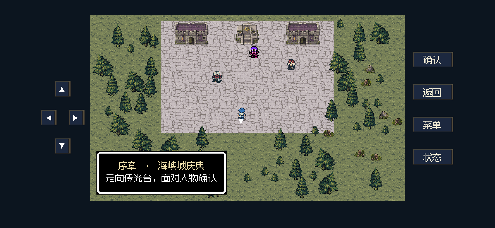

iPhone横屏修复 · 0.10.2
已安装到连接的iPhone16 · 原2个记录及2个恢复副本逐字节保留
中间画面加宽约25% · 提示避让人物 · 切换我方 · 清晰战前信息 · 长按3倍 · 保存并返回主菜单
修改后图片来自同分辨率、安全区的后台渲染，包含成品数据包检查。手机处于需密码解锁状态，后台启动未完成，未进行前台真机触摸试玩。
下载本地开发签名IPA · 完整说明与验证范围 · 交付校验记录
提示与画面比例 · 修改后
同分辨率、安全区的后台渲染。场景加宽，赫兰直接可见，说明位于底部空白处。
